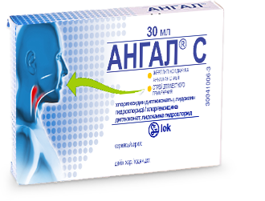

АНГАЛДЫ ТАҢДАУДЫҢ 10 СЕБЕБІ ҚАНДАЙ?
Тамақ ауыруының
туындау себебін жояды
туындау себебін жояды
Тамақ ауруынан
құтқарады
құтқарады
Бактерияға және
саңырауқұлаққа қарсы
әсер етеді
саңырауқұлаққа қарсы
әсер етеді
2-5 минуттан
кейін-ақ әсер
ете бастайды
кейін-ақ әсер
ете бастайды
Екі түрлі
болып
шығарылады
болып
шығарылады
Жүктілік және емізу
кезінде қысқа мерзімге
Ангал пастилкаларын
қабылдауға болады
кезінде қысқа мерзімге
Ангал пастилкаларын
қабылдауға болады
Қабылдау 5
жастан
жастан
Ангал пастилкалары
құрамында қант жоқ
құрамында қант жоқ
Ментолдың дәмі
ұнамды
ұнамды
Европейское
качество
качество
Көбірек біліңіз - бейне роликті көрініз
Дәрілік зат туралы толық мәлімет

Ангал®Соруға арналған Пастилкалар
Белсенді заттар:
хлоргексидина дигидрохлорид 5.00 мг (включая 5% избыток 5.25 мг)
лидокаина гидрохлорид 1.00 мг (включая 10% избыток 1.10 мг)
Көмекші заттар:
левоментол, сорбитол, магния стеарат
Қолданылу шарттары:
- Баспа белгілерінің алдын-алу (жұтқынғанда ауыру, тітіркену)
- Ауыз шырышты қабығының қабынуы кезінде ауруды басу
- Жұтқыншақ пен ауыз шырышты қабығының (стоматит, пингивит) қабынуын жергілікті емдеу
Мөлшерлеме:
5-12 жастағы балалар
1 пастилкадан күніне 2-3 рет
12 жастан асқан балалар мен ересектер
1 пастилкадан күніне 6-10 рет
Орам да
24 пастилка
24 пастилка
Нұсқаулықты қараңыз

Ангал®СЖергілікті қолдануға арналған спрей
Белсенді заттар:
хлоргексидин диглюконат 20% ерітіндіде 1.064 г
лидокаин гидрохлорид 0.050 г
Қосалқы заттар:
Моногидрат лимон қышқылы, глицерин, натрия сахарин, левоментол, цинеол, этил спирті 96%, тазартылған су
Қолданылуы:
- Бспа белгілері мен жұтқыншақ тітікркенуін жеңілдету
- Тамақ қабынуы кезінде ауырсынуды басу
Мөлшерлеме:
5-12 жастағы балалар
Тәулігіне 3-5 рет 2-3 бүрку
12 жастан асқан балалар мен ересектерге
Тәулігіне 6-10 рет 3-5 бүрку
Полиэтиленді бүркігіші бар
қоңыр әйнек құты 30 мл
қоңыр әйнек құты 30 мл
Нұсқаулықты қараңыз
ҚАЙДАН АЛУҒА БОЛАДЫ?
23 аптеки:
"от А до Я" дәріханасы
Алматы қ. Саин к, 12а
MS HELP дәріханалар желісі
Алматы қ, Фурманов к. ,51 Маметова қи-сы
Мейир-Фарм; № 7 дәріханасы
Алматы қ, Достық д., 107, Қажымұқан к. қи-сы
Медикус-центр
Алматы, Сүйінбай д.143-а, Баянауыл к.қи-сы
"Ева" дәріханасы
Шымкен қ., Елшібек батыр к., 91, 31 пәтер
"Ева" дәріханасы
Шымкент қ., Нұрсат 157 ықшам ауданы,
"Ева" дәріханасы
Шымкен қ., Түркістан к. 2/3, 103-104 пәтер
"Ева" дәріханасы
Шымкен қ., Тимирязев к. 149
ТАҒАЙЫНДАР ЖӘНЕ ҚОЛДАНАР АЛДЫНДА
НҰСҚАУЛЫҚПЕН ТАНЫСЫҢЫЗ
Қазақстан Ресуликасы аумағында өнім сапасына қатысты тұтынушылардың арыз-шағымдарын қабылдайтын ұйымның мекен-жайы: Алматы қ., Луганский к.96
Телефон нөмірі:
+7 727 258 10 48
Факс:
+7 727 258 10 47
E-mail:
kzsdz.drugsafety@sandoz.com
Қазақстан бойынша тегін қоңырау шалу:
8 800 080 00 66
Ақпарат төменде көрсетілген дерек көздерінде берілген мәліметтер негізінде алынды:
Ангал ® медицинада қолдану жөніндегі нұсқаулық,. №743 бұйрық 21.08.2013 ж берілген, нөмірі РУ РК-ЛС-5№011622 21.08.2013 ж. берілген, 21.08.2018 ж. дейін жарамды
Ангал ® С, медицинада қолдану жөніндегі нұсқаулық №7 бұйрық 09.01.2014 ж. берілген, нөмірі РУ РК-ЛС-5№011563 09.01.2014 ж. берілген, 09.01.2019 ж. дейін жарамды